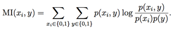

CS229
Lecture notes
翻译：CycleUser
Part VII 正则化（Regularization）与模型选择（model selection）
设想现在有一个机器学习的问题，我们要从一系列不同的模型中进行挑选。例如，我们可能是用一个多项式回归模型（polynomial regression model）hθ(x) = g(θ0 + θ1x + θ2x2 + ··· + θkxk)，然后想要判定这里的多项式次数 k 应该是多少，0， 1，...，或者 10。那我们怎么才能自动来选择一个能够在偏差（bias）/方差（variance）之间进行权衡的模型呢？1
或者换一个说法，假如我们希望能够自动选出来一个带宽参数（bandwidth parameter） τ
来用于局部加权回归（locally
weighted regression，所谓为 LWR，参考 note1的第2节），或者要自动选出一个参数 C 用于拉格朗日正则化的支持向量机算法（l1-regularized SVM）。怎么来实现呢？
为了具体一些，咱们这一系列讲义中都假设备选集合的模型个数有限M = {M1,...,Md}。例如，在我们上面刚刚随便举的本章第一个例子中，Mi 就是一个 i次多项式拟合模型（i-th order polynomial regression model）。（其实把 M 扩展到无穷集合也不难的。2）换个说法就是，如果我们要从支持向量机算法（SVM）、神经网络算法（neural network）、逻辑回归算法（logistic regression）当中三选一，那么这里的 M 就应该都包含了这些模型了。
1考虑到前面的讲义中我们已经提到过偏差（bias）/方差（variance）这两个家伙有很大区别，有的读者可能觉得是不是应该把它们叫做一对“孪生（twin）”魔鬼（evils）。或许可以把它们俩当做是一对异卵双胞胎（non-identical twins）。理解概念差别就好了，怎么说什么的都不要紧的。
2如果我们要从一个无穷的模型集合中进行选取一个，假如说要选取一个带宽参数 τ ∈ R+ （正实数）的某个可能的值，可以将 τ 离散化，而只考虑有限的一系列值。更广泛来说，咱们要讲到的大部分算法都可以看做在模型空间（space of models）中进行优化搜索（performing optimization search）的问题，这种搜索也可以在无穷模型类（infinite model classes）上进行。
1 交叉验证（Cross validation）
一如既往，假如我们得到了一个训练集 S。我们已经了解了经验风险最小化（empirical risk minimization，缩写为 ERM），那么接下来就要通过使用 ERM 来进行模型选择来推导出一种新的算法：
1.
对训练集 S 中的每一个模型（model） Mi 进行训练，得到某假设类(hypothesis) hi。
2.
从这些假设中选取训练误差最小的假设（hypotheses）。
上面这个算法是行不通的。比如考虑要选择多项式的阶（最高次项的次数）的情况。多项式的阶越高，对训练集 S 的拟合程度就越好，训练误差自然也就更小。然而，这个方法选出来的总是那种波动非常强（high-variance）的高次多项式模型（high-degree polynomial model），这种情况我们之前就讲过了，通常都是很差的选择。
下面这个算法就更好一些。这个方法叫做保留交叉验证（hold-out cross validation），也叫做简单交叉验证（simple cross validation），步骤如下：
1.
随机拆分训练集 S 成 Strain (例如，可以选择整体数据中的 70% 用于训练) 和 Scv (训练集中剩余的 30%用于验证)。这里的 Scv 就叫做保留交叉验证集（hold-out cross validation set）。
2.
只对集合 Strain 中的每一个模型 Mi 进行训练，然后得到假设类（hypothesis） hi。
3. 筛选并输出对保留交叉验证集有最小误差 εˆScv (hi) 的假设hi 。（回忆一下，这里的 εˆScv (hi) 表示的是假设 h
在保留交叉验证集 Scv 中的样本的经验误差（empirical
error）。）
这样通过在一部分未进行训练的样本集合 Scv 上进行测试，我们对每个假设 hi 的真实泛化误差（generalization
error）就能得到一个比上一个方法更好的估计，然后就能选择出来一个有最小估计泛化误差（smallest estimated generalization error）的假设了。通常可以选择 1/4 到 1/3 的数据样本用来作为保留交叉验证集（hold out cross validation set），30% 是一个很典型的选择。
还有另外一种备选方法，就是在第三步的时候，也可以换做选择与最小估计经验误差 εˆScv (hi) 对应的模型 Mi ，然后对整个训练样本数据集 S 使用 Mi 来进行再次训练。（这个思路通常都不错，但有一种情景例外，就是学习算法对初始条件和数据的扰动（perturbations of the initial conditions
and/or data）非常敏感的情况。在这样的方法中，适用于Strain 的模型未必就能够同样适用于 Scv，这样就最好还是放弃再训练的步骤（forgo this retraining step）。）
使用保留交叉验证集（hold
out cross validation set）的一个弊端就是“浪费（waste）”了训练样本数据集的 30% 左右。甚至即便我们使用了备选的那个针对整个训练集使用模型进行重新训练的步骤，也还不成，因为这无非是相当于我们只尝试在一个 0.7 m 规模的训练样本集上试图寻找一个好的模型来解决一个机器学习问题，而并不是使用了全部的 m 个训练样本，因为我们进行测试的都是每次在仅 0.7 m 规模样本上进行训练而得到的模型。当然了，如果数据非常充足，或者是很廉价的话，也可以用这种方法，而如果训练样本数据本身就很稀缺的话（例如说只有 20 个样本），那就最好用其他方法了。
下面就是一种这样的方法，名字叫k-折交叉验证(k-fold cross validation)，这样每次的用于验证的保留数据规模都更小：
1.
随机讲训练集 S 切分成 k 个不相交的子集，其中每一个子集的规模为 m/k 个训练样本。咱们就把这些子集称为 S1,...,Sk。
2.
对每个模型 Mi，我们都按照下面的步骤来进行评估（evaluate）：对 j = 1, ..., k，在 S1 ∪···∪Sj−1 ∪Sj+1 ∪···Sk上（也就是除了 Sj 之外的其他所有数据）对模型 Mi 进行训练，然后得到假设 hij 。接下来针对 Sj 使用假设 hij 进行测试，得到经验误差 εˆSj (hij )。对 εˆSj (hij) 取平均值（也就是对所有的 j 都计算然后取平均值），计算得到的值就当做是模型 Mi 的估计泛化误差（estimated
generalization error）。
3.
选择具有最小估计泛化误差（lowest estimated generalization error）的模型 Mi 的，然后在整个训练样本集 S 上重新训练该模型。这样得到的假设（hypothesis）就可以输出作为最终结果了。
通常这里进行折叠的次数（number
of folds）k 一般是 10，即 k = 10。这样每次进行保留用于验证的数据块就只有 1/k ，这就比之前的 30% 要小多了，当然这样一来这个过程也要比简单的保留交叉验证方法消耗更多算力成本，因为现在需要对每个模型都进行 k 次 训练。
虽然通常选择都是设置 k =
10，不过如果一些问题中数据量确实很匮乏，那有时候也可以走一点极端，设 k = m，这样是为了每次能够尽可能多地利用数据，尽可能少地排除数据。这种情况下，我们需要在训练样本集 S 中除了某一个样本外的其他所有样本上进行训练，然后在保留出来的单独样本上进行检验。然后把计算出来的 m = k 个误差放到一起求平均值，这样就得到了对一个模型的泛化误差的估计。这个方法有专门的名字；由于每次都保留了一个训练样本，所以这个方法就叫做弃一法交叉验证（leave-one-out cross validation）。
最后总结一下，咱们讲了不同版本的交叉验证，在上文中是用来作为选择模型的方法，实际上也可以更单纯地用来对一个具体的模型或者算法进行评估。例如，如果你已经实现了某中学习算法，然后想要估计一下针对你的用途这个算法的性能表现（或者是你创造了一种新的学习算法，然后希望在技术论文中报告你的算法在不同测试集上的表现），交叉验证都是个很好的解决方法。
2 特征选择（Feature Selection）
模型选择（model selection）的一个非常重要的特殊情况就是特征选择（feature selection）。设想你面对一个监督学习问题（supervised learning problem），其中特征值的数量 n 特别大（甚至可能比训练样本集规模还大，即n ） m），然而你怀疑可能只有一小部分的特征（features）是与学习任务“相关（relevant）”的。甚至即便是针对 n 个输入特征值使用一个简单的线性分类器（linear classifier，例如感知器 perceptron），你的假设类（hypothesis class）的 VC 维（VC dimension）也依然能达到 O(n)，然后这样的话就很有过拟合（overfitting）的潜在风险，除非训练样本集也足够巨大（fairly large）。
在这样的一个背景下，你就可以使用一个特征选择算法，来降低特征值的数目。假设有 n 个特征，那么就有 2n 种可能的特征子集（因为 n 个特征中的任意一个都可以被某个特征子集（feature subsets）包含或者排除），因此特征选择（feature selection）就可以看做是一个对 2n 种可能的模型进行选择（model selection problem）的形式。对于特别大的 n，要是彻底枚举（enumerate）和对比全部 2n 种模型，成本就太高了，所以通常的做法都是使用某些启发式的搜索过程（heuristic search procedure）来找到一个好的特征子集。下面的搜索过程叫做向前搜索（forward search）：
1.
初始化（Initialize）一个集合为空集 F = ∅.
2.
循环下面的过程 {
(a) 对于 i =1, ..., n ，如果i̸∈F, 则令 Fi =F∪{i}，然后使用某种交叉验证（cross validation）来评估特征 Fi。（也就是说，仅仅使用 Fi 当中的特征来训练你的学习算法，然后估计一下泛化误差（generalization error）。）
(b) 将 F 设为步骤 (a) 中的最佳特征子集（best feature subset）。}
3.
整个搜索过程中筛选出来了最佳特征子集（best feature subset），将其输出。
上面这个算法最外层的循环体（outer
loop）可以在 F = {1, ... , n} 达到全部特征规模的时候终止（terminated），或者也可以在 |F | 超过某个预设阈值的情况下终止（这种情况对应的就是例如你可能对算法要用到的特征数量设定了最大值）。
这个算法描述的是对模型特征选择进行包装（包装器特征选择算法，Wrapper feature selection algorithms）的一个实例，此算法本身就是一个将学习算法进行“打包（wraps）”的过程，然后重复调用这个学习算法来评估（evaluate）此算法对不同的特征子集（feature subsets）的处理效果。除了向前搜索外，还可以使用其他的搜索过程。例如，可以逆向搜索，从 F = {1, ..., n} ，即规模等同于全部特征开始，然后重复，每次删减一个特征，直到 F 为空集，即 F = ∅ 时终止。
这种包装器特征选择算法（Wrapper
feature selection algorithms）通常效果不错，不过对算力开销也很大，尤其是要对学习算法进行多次调用。实际上，完整的向前搜索（forward search，也就是 F 从空集开始，到最终达到整个样本集规模，即 F = {1, ..., n} 终止）将要对学习算法调用约 O(n2) 次。
过滤器特征选择法（Filter feature
selection methods）给出的特征子集选择方法更具有启发性（heuristic），而且在算力上的开销成本也更低。这里的一个思路是，计算一个简单的分值 S(i)，用来衡量每个特征 xi 对分类标签（class labels） y 所能体现的信息量。然后，只需找到最大信息量分值 S (i) 的一组，选择使用其中的 k 个特征。
怎么去定义用于衡量信息量的分值 S(i)
呢？一种思路是使用 xi 和 y 之间的相关系数的值（或其绝对值），这可以在训练样本数据中算出。这样我们选出的就是与分类标签（class labels）的关系最密切的特征值（features）。实践中，通常（尤其当特征 xi 为离散值（discrete-valued
features））选择 xi 和 y
的互信息（mutual information）来作为 S(i)，缩写为 MI(xi, y)。

（上面这个等式中，假设了 xi 和 y
都是二值化的二进制值；更广泛的情况下总和（summations）将会超过变量的范围（domains
of the variables）。）p(xi,y)， p(xi) 和 p(y) 的概率都可以根据它们在训练集上的经验分布（empirical distributions）而推测（estimated）得到。
要对这个信息量分值的作用有一个更直观的印象，也可以将互信息（mutual information）表达成 KL 散度（Kullback-Leibler divergence，也称 KL 距离，常用来衡量两个概率分布的距离）：

在下一节当中，你会与 KL 散度进行更多的接触，这里比较通俗地说，这个概念对 p(xi,y) 和 p(xi)p(y) 的概率分布的差异程度给出一个衡量。如果 xi 和 y
是两个独立的随机变量，那么必然有 p(xi, y) = p(xi)p(y)，而两个分布之间的 KL 散度就应该是 0。这也符合下面这种很自然的认识：如果 xi 和 y
相互独立，那么 xi 很明显对 y
是“完全无信息量（non-informative）”的，因此对应的信息量分值 S(i) 就应该很小。与之相反地，如果 xi对 y
“有很大的信息量（informative）”，那么这两者的互信息MI(xi,y) 就应该很大。
最后一个细节：现在你已经根据信息量分值 S(i)
的高低来对特征组合（features）进行了排序，那么要如何选择特征个数 k 呢？一个标准办法就是使用交叉验证（cross validation）来从可能的不同 k 值中进行筛选。例如，在对文本分类（text classification）使用朴素贝叶斯方法（naive Bayes），这个问题中的词汇规模（vocabulary size） n 通常都会特别大，使用交叉验证的方法来选择特征子集（feature subset），一般都能提高分类器精度。
3 贝叶斯统计（Bayesian statistics）和正则化（regularization）
在本章，我们要讲一下我们“军火库（arsenal）”中的另外一种工具，用于我们对抗过拟合（overfitting）的战斗。
在本章的开头部分，我们谈到了使用最大似然（maximum likelihood，缩写为 ML）来进行参数拟合，然后根据下面的式子来选择参数：

在我们随后的讨论中，我们将θ视为世界的一个未知参数。 频率统计中将θ视为恒定值但未知的观点。 在频域中，这个世界的观点，θ并不是随机的 - 它恰好是未知的 - 我们的工作是提出统计程序（如最大似然）来尝试估计这个参数。
在后续的讨论中，我们都是把 θ
看作是一个未知参数（unknown
parameter）。在频率统计（frequentist
statistics）中，往往采用的观点是认为 θ
是一个未知的常量（constant-valued）。在频率论（frequentist）的世界观中，θ 只是碰巧未知，而不是随机的，而我们的任务就是要找出某种统计过程（statistical procedures，例如最大似然法（maximum likelihood）），来对这些参数进行估计。
另外一种解决我们这个参数估计问题的方法是使用贝叶斯世界观，把 θ 当做是未知的随机变量。在这个方法中，我们要先指定一个在 θ 上的先验分布（prior distribution）p(θ)，这个分布表达了我们关于参数的“预先判断（prior beliefs）”。给定一个训练集合 S = {(x(i),y(i))}mi=1，当我们被要求对一个新的 x 的值进行预测的时候，我们可以计算在参数上的后验分布（posterior distribution）：

在上面的等式中，p(y(i)|x(i),θ) 来自你所用的机器学习问题中的模型。流入，如果你使用贝叶斯逻辑回归（Bayesian logistic regression），你可能就会选择 p(y(i)|x(i), θ) = hθ(x(i))y(i) (1−hθ(x(i)))(1−y(i))，其中 hθ(x(i)) = 1/(1 + exp(−θT x(i)))3。
若有一个新的测试样本 x，然后要求我们对这个新样本进行预测，我们可以使用 θ 上的后验分布（posterior distribution）来计算分类标签（class label）上的后验分布：

在上面这个等式中，p(θ|S) 来自等式 (1)。例如，如果目标是要根据给定的 x 来预测对应的 y 的值，那就可以输出4：

这里我们简单概述的这个过程，可认为是一种“完全贝叶斯（fully Bayesian）”预测，其中我们的预测是通过计算相对于 θ 上的后验概率 p(θ|S)
的平均值而得出的。然而很不幸，这个后验分布的计算通常是比较困难的。这是因为如等式 (1) 所示，这个计算需要对 θ 进行积分（integral），而 θ 通常是高维度的（high-dimensional），这通常是不能以闭合形式（closed-form）来实现的。
因此在实际应用中，我们都是用一个与 θ 的后验分布（posterior distribution）近似的分布来替代。常用的一个近似是把对 θ 的后验分布（正如等式(2) 中所示）替换为一个单点估计（single point estimate）。对 θ 的最大后验估计（MAP，maximum a posteriori estimate）为：

3 由于我们在这里把 θ 看作是一个随机变量了，就完全可以在其值上使用条件判断，然后写成 “p(y|x,
θ)” 来替代 “p(y|x; θ)”。
4 如果 y
是一个离散值（discrete-valued），那么此处的积分（integral）就用求和（summation）来替代。
注意到了么，这个式子基本和对 θ 的最大似然估计（ML (maximum likelihood) estimate）是一样的方程，除了末尾多了一个先验概率分布 p(θ)。
实际应用里面，对先验概率分布 p(θ)
的常见选择是假设 θ
∼ N(0 , τ2I)。使用这样的一个先验概率分布，拟合出来的参数 θMAP 将比最大似然估计得到的参数有更小的范数（norm）。（更多细节参考习题集 #3。）在实践中，贝叶斯最大后验估计（Bayesian MAP estimate）相比于参数的最大似然估计（ML estimate of the parameters），前者就更易于避免过拟合。例如，贝叶斯逻辑回归（Bayesian logistic regression）就是一种非常有效率的文本分类（text classification）算法，即便在文本分类中参数规模 n 通常是远远大于样本规模 m 的，即 n ≫ m。